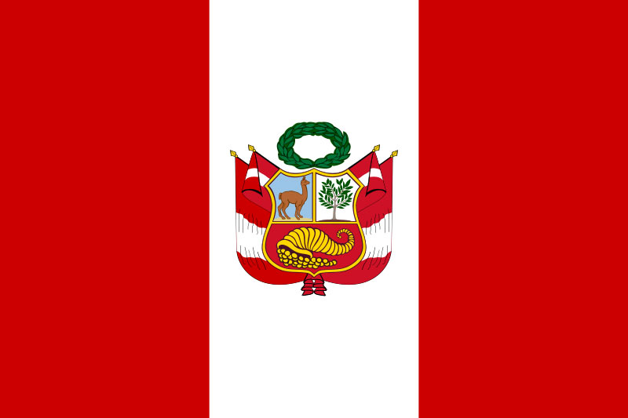
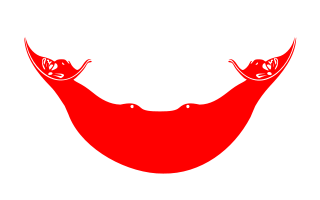
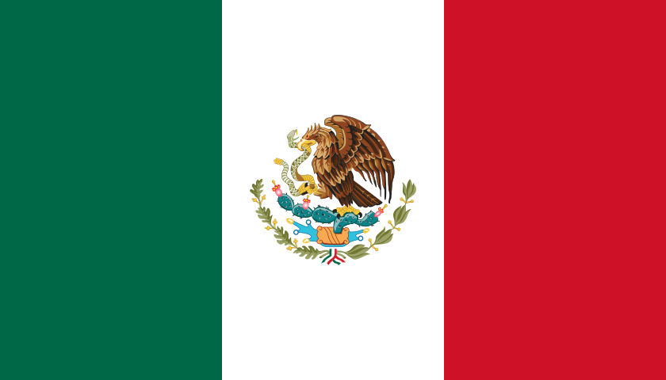

I'm a curious traveller attracted to obscure and unusual locations. In my bucket list are places like Chernobyl, Antarctica, Kolyma Highway, and other similar locations. The map above shows all the places I've been to so far. The list below links to individual pages for all the spots I've explored already. My profile and reviews on Tripadvisor
Pushing myself out of my comfort zone
| China |
Quite an unusual & unique experience

|
Democratic People's Republic of Korea (DPRK) |
Camping in the Andes on my trek to Machu Picchu
|  | Peru |
Most remote place I've ever been to
|  | Easter Island |
Exploring southern Japan for over a month

|
Japan |
Living on the border
|  | Mexico |
Camping for the first time

|
Grand Canyon |
My Bucket List
So far these are all the places I have at the top of my bucket list. They tend to be the places most people don't plan on travelling to or exploring. However, for me that's what interests me the most. I'll add more as I find out more unusual places.- • Antactica
- • Saudi Arabia
- • Chernobyl
- • Russia
- ○ Kolyma Highway
- ○ Lake Baikal
- ○ Ural Mountains
- ○ Kadykchan
- • Kashmir (India)
- • Tehran
- • Tibet
- • Central Asia
- • Arctic Circle
Marathons
I'm also a marathon runner. So far I've run 2 full marathons and 2 half marathons. My times haven't been great but I'm working on improving them. I plan on running various marathons around the world until eventually taking on the 7 continent challenge. Perhaps in the future I'll also tackle an ultramarathon but for now marathons satisfy me.- • Rock n Roll Dallas Half Marathon (March 2016)
- • Rock n Roll Las Vegas Marathon (November 2016)
- • McAllen Marathon (January 2017)
- • Austin Marathon (February 2017)